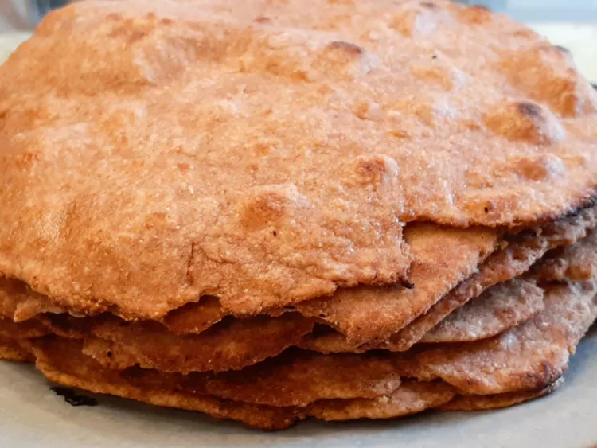

Quick Whole Wheat Chapati

Description
Chapati is an unleavened whole wheat bread that is eaten in India. We love to use it as a wrap.
Ingredients
- 2 ½ cups whole wheat flour
- ¾ teaspoon salt
- 1 cup water
Steps
You'll find the full, step-by-step recipe below — but here's a brief overview of what you can expect when you make
this simple quick whole wheat chapati:
- Mix flour and salt together in a bowl. Stir in water to form a soft dough.
- Turn dough out onto a lightly floured work surface and knead several times. Divide into 8 pieces and roll each
into a ball. Roll each ball into a very thin round using a rolling pin.
- Heat a griddle over medium-high heat. Cook each dough round on griddle until dough bubbles and blisters appear,
about 2 minutes. Flip and cook until lightly browned on the other side
HOME
Back